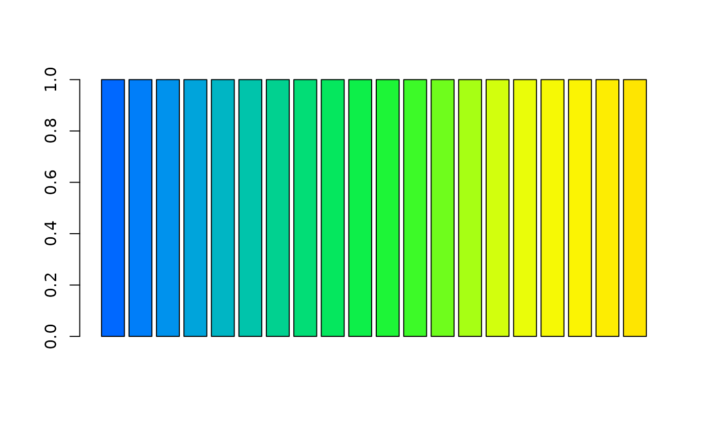
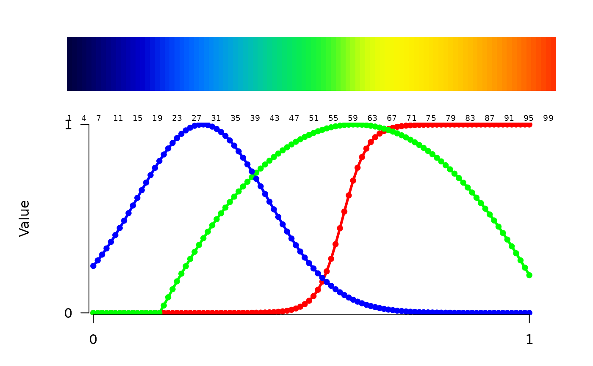
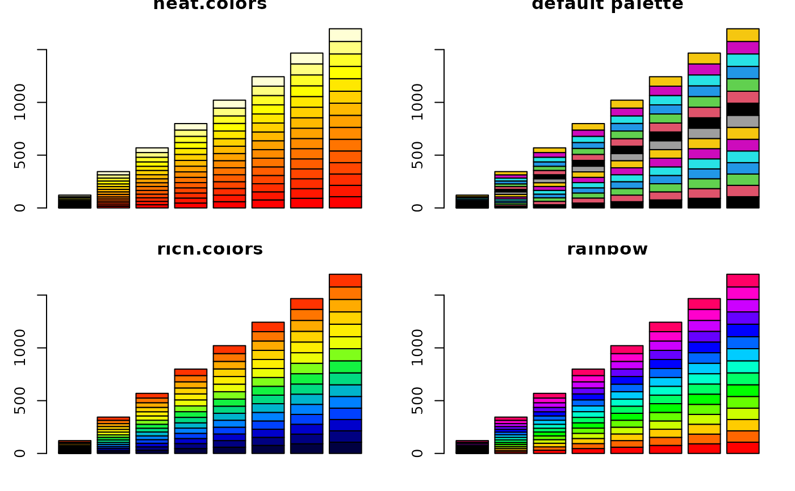

Create a vector of n colors that are perceptually equidistant and in
an order that is easy to interpret.
rich.colors(n, palette = "temperature", alpha = 1, rgb = FALSE, plot = FALSE)number of colors to generate.
palette to use: "temperature" contains
blue-green-yellow-red, and "blues" contains black-blue-white.
alpha transparency, from 0 (fully transparent) to 1 (opaque).
if TRUE then a matrix of RGBA values is included as an
attribute.
whether to plot a descriptive color diagram.
A character vector of color codes.
m <- abs(matrix(1:120+rnorm(120), nrow=15, ncol=8))
opar <- par(bg="gray", mfrow=c(1,2))
matplot(m, type="l", lty=1, lwd=3, col=rich.colors(8))
matplot(m, type="l", lty=1, lwd=3, col=rich.colors(8,"blues"))
par(opar)
barplot(rep(1,100), col=rich.colors(100), space=0, border=0, axes=FALSE)
barplot(rep(1,20), col=rich.colors(40)[11:30]) # choose subset

plot(m, rev(m), ylim=c(120,0), pch=16, cex=2,
col=rich.colors(200,"blues",alpha=0.6)[1:120]) # semitransparent
rich.colors(100, plot=TRUE) # describe rgb recipe

#> [1] "#000040FF" "#000047FF" "#00004FFF" "#000057FF" "#000060FF" "#000069FF"
#> [7] "#000073FF" "#00007DFF" "#000087FF" "#000091FF" "#00009CFF" "#0000A6FF"
#> [13] "#0000B0FF" "#0000BAFF" "#0000C4FF" "#0000CEFF" "#000AD6FF" "#0015DFFF"
#> [19] "#0020E6FF" "#002BEDFF" "#0035F2FF" "#003FF7FF" "#0049FBFF" "#0053FDFF"
#> [25] "#005CFFFF" "#0065FFFF" "#006EFEFF" "#0076FCFF" "#007FF9FF" "#0087F5FF"
#> [31] "#008FF0FF" "#0096E9FF" "#009DE2FF" "#00A4DBFF" "#00ABD2FF" "#00B2C9FF"
#> [37] "#00B8BFFF" "#00BEB5FF" "#00C3ABFF" "#01C9A1FF" "#01CE97FF" "#01D38CFF"
#> [43] "#01D882FF" "#02DC78FF" "#03E06EFF" "#04E465FF" "#06E85CFF" "#08EB53FF"
#> [49] "#0CEE4BFF" "#10F143FF" "#17F43CFF" "#1FF635FF" "#2AF82FFF" "#38FA2AFF"
#> [55] "#49FB25FF" "#5DFC20FF" "#73FD1CFF" "#89FE18FF" "#9FFF15FF" "#B3FF12FF"
#> [61] "#C5FF0FFF" "#D3FF0DFF" "#DEFE0BFF" "#E7FD09FF" "#EEFC08FF" "#F3FB06FF"
#> [67] "#F6F905FF" "#F9F704FF" "#FBF504FF" "#FCF303FF" "#FDF002FF" "#FDED02FF"
#> [73] "#FEEA02FF" "#FEE701FF" "#FEE301FF" "#FFDF01FF" "#FFDB01FF" "#FFD701FF"
#> [79] "#FFD200FF" "#FFCD00FF" "#FFC800FF" "#FFC200FF" "#FFBD00FF" "#FFB700FF"
#> [85] "#FFB000FF" "#FFAA00FF" "#FFA300FF" "#FF9C00FF" "#FF9500FF" "#FF8D00FF"
#> [91] "#FF8500FF" "#FF7D00FF" "#FF7500FF" "#FF6C00FF" "#FF6300FF" "#FF5A00FF"
#> [97] "#FF5100FF" "#FF4700FF" "#FF3D00FF" "#FF3300FF"
par(mfrow=c(2,2))
barplot(m, col=heat.colors(15), main="\nheat.colors")
barplot(m, col=1:15, main="\ndefault palette")
barplot(m, col=rich.colors(15), main="\nrich.colors")
barplot(m, col=rainbow(15), main="\nrainbow")

par(opar)